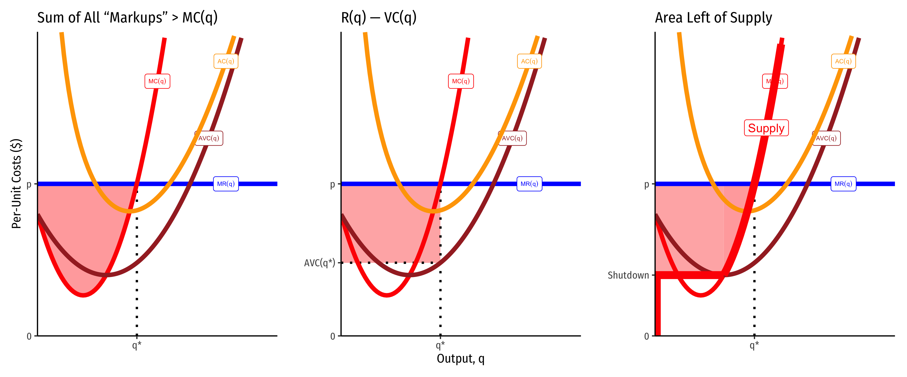
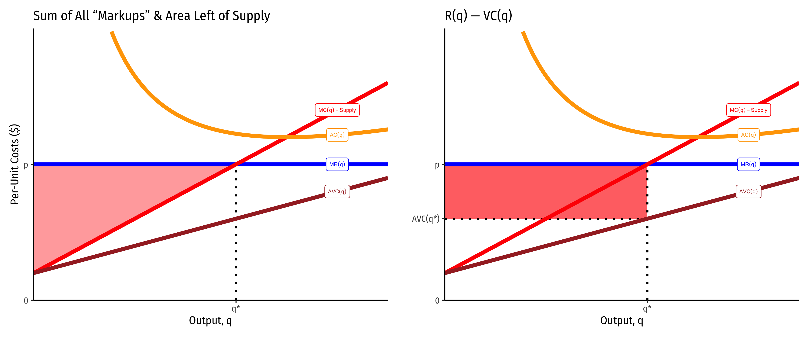
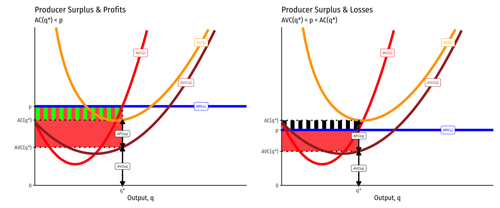
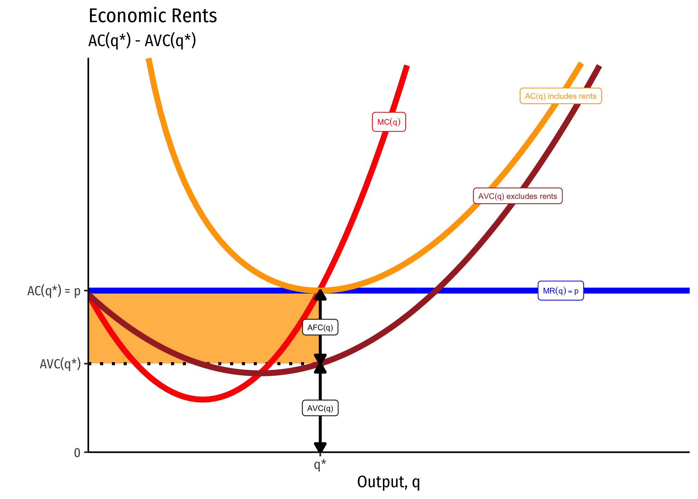
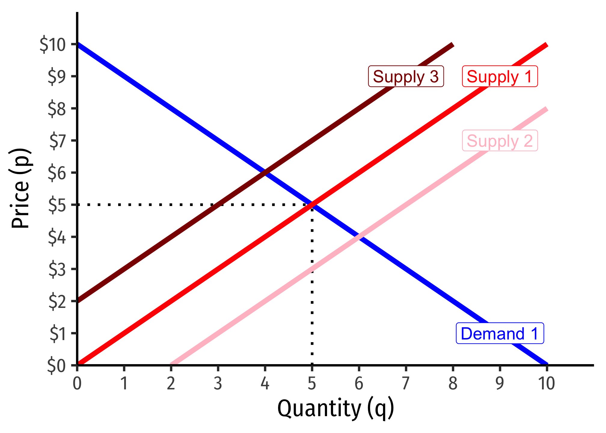

2.6 — Long Run Industry Equilibrium — Appendix
Producer Surplus
You may recall from principles of microeconomics the concepts of consumer surplus and producer surplus in markets. While we will study them in our next unit with Supply & Demand, we can talk about the producer surplus to each firm here.
Producer surplus essentially measures the “gains from exchange” to each party — for a producer, it is how much they benefit (on net) from selling their output.
There are three equivalent ways of visualizing and measuring producer surplus for a firm. I will begin with a generalized series of cost curves:

These often converge, and are also easier to identify when marginal cost is linear (and thus, average variable cost is also linear, and starts at the same point as marginal cost, the shutdown price). Here it producer surplus becomes the familiar “triangle” between the market price and the supply curve. Note we can also calculate it as the rectangle of revenues minus variable costs (right).

What’s the Difference Between Producer Surplus and Profit?
Producer surplus (PS) looks a lot like profits \((\pi)\), but they are in fact different:
\[\begin{align*} \color{red}{PS} &= R(q) - VC\\ & \\ \color{green}{\pi} & = R(q) - C(q) \\ \color{green}{\pi} &= R(q) - VC(q)-f\\ & \\ \color{green}{\pi}-\color{red}{PS}&=-f\\ \color{green}{\pi}&=\color{red}{PS}-f\\ \end{align*}\]
Producer surplus does not include fixed costs \((f)\), but profit \((\pi)\) does.
If there are no fixed costs, then producer surplus and profits are the same thing.
This leads to some other implications connected with the shutdown condition \(p<AVC(q)\). A firm will always earn producer surplus, but may earn losses (negative profit) so long as the price is above the shutdown price. This is because each unit of output sold generates at least enough revenues as (non-fixed) variable costs, \(pq \geq VC(q)\) or (dividing by \(q)\) \(p \geq AVC(q)\).
A firm will shut down production in the short run if it earning no producer surplus. This would happen if it earns fewer revenues than (non-fixed) variable costs: \(pq < VC(q)\) or (dividing by \(q)\) \(p < AVC(q)\).
Thus producer surplus exists \(\iff p>AVC(q)\).

Economic Rents
Economic rents come from factors of production that are fixed in supply (talent, productive land, etc.). Take productive land for a moment, which has a fixed supply. There would be just as much land supplied at a price of zero dollars as at $1000 (its factor supply curve is perfectly inelastic), because (assume for a moment) we can’t produce any more of it.
For the economy as a whole, it is the price of agricultural products that determines the value of agricultural land (used to grow agricultural products). But for the individual farmer (firm producing food), the value of her land that she rents is a cost of production that enters into the pricing of her product.
Below, \(AVC(q)\) represents the average cost curve for all variable factors of production, i.e. excluding land costs (the fixed factor). If the price of the crop grown on this land is p∗, then the “profits” attributable to the land are measured by the area in orange: these are the economic rents. This is how much the rent (price) of the land would be in a competitive market — whatever it took to drive the profits to zero.

In long run equilibrium, if there is competition for the productive land, the price of the land will be bid upwards, raising the cost to the farmers who must rent it, and raising the income to the owner of the land. Thus, economic rents increase to push profits to the firms to zero (but higher-than-opportunity-cost returns to the owners of land), since they must pay more to rent it.
The average cost curve including the cost of the land is \(AC(q)\). Since the equilibrium rent for the land will be whatever it takes to drive firm profits to zero:
\[\begin{align*} \underbrace{R(q^\star) - C(q^\star)}_{\pi} &= 0\\ p^\star q^\star - VC(q^\star) - rent &= 0\\ rent &= p^\star q^\star - VC(q^\star)\\ \end{align*}\]
In other words, economic rent is the difference between revenues \((p^\star q^\star)\) and variable costs. On the graph below, this is shaded in orange; we can also see it per unit as the difference between price and average variable costs (i.e. \(AFC(q))\).
This shows that rent is also precisely the same thing as producer surplus (discussed above). That means you can also calculate the economic rent as the area to the left of the marginal cost curve, etc.
Given what we said in the equations above, it is now easier to see the truth of what we said earlier: it is the market equilibrium price that determines economic rents, not the reverse. The firm supplies along its marginal cost curve — which is independent of the cost of the fixed factors. Rents will adjust to drive profits to zero.
The Shape of the Long Run Industry Supply Curve: External Economies
When all firms produce more/less or firms enter or exit an industry due to profits or losses, this affects the equilibrium market price, and is commonly called the “entry price effect”.
The simplest way to see this is to simply consider a series of supply and demand graphs where there are profits or losses that cause a change in supply:
- Entry of new firms into a profitable industry will cause an increase in supply (supply curve shifts to the right), and thus a decrease in market price
- In the graph below, Supply 1 to Supply 2
- Exit of firms out of an industry suffering losses will cause a decrease in supply (supply curve shifts to the left), and thus an increase in market price
- In the graph below, Supply 1 to Supply 3

Exactly how large this effect will be depends on the idea of external economies of scale1: how the scale of industry output affects costs for all firms in the industry.
Recall that “economies of scale” refer to how a firm’s average costs change with its output — and is often referred to as “internal economies of scale” since the economic effect is captured by the individual firm: e.g. under economies of scale, if it produces more, its average costs decrease.
What we are considering now is a form of externality: how the size and output of an entire industry “spills over” to all the firms by affecting their costs. An increase in the size of an industry (in terms of firms and total output) might have no effect on costs for all the firms in the industry, raise costs for all the firms, or lower costs for all the firms. As such, these are the three possibilities:
- Constant Cost Industry (no external economies) — horizontal LR supply curve
- Increasing Cost Industry (external diseconomies) — upward sloping LR supply curve
- Decreasing Cost Industry (external economies) — downward sloping LR supply curve (!)
Footnotes
Often referred to simply as “external economies.”↩︎